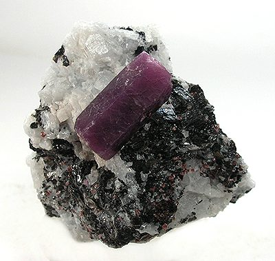

Lichinus
Lichinus, also called Lychnis or Lychinites, is a lamp-bright fiery gem found in many places; ² the most admired kind comes from India. ¹ Red and purple forms are described. ² The purple kind attracts straw when heated by the sun or rubbed, and holds wax when a carved image is pressed into a seal. ²
Generic
Description
Lichinus is counted among the fiery gems and takes its name from the shining of a lamp. ² It occurs in many places, and the Indian kind is most admired. ¹ ² Some regard it as a weaker Carbuncle. ¹ The sources describe purple and scarlet-red forms, while other kinds are counted but left undescribed.
Variants
| Form | Appearance and properties | Sources |
|---|---|---|
| Subtype I: Scarlet-Red Lichinus | Glows with the redness of scarlet. ¹ | ¹ |
| Subtype II: Carbuncle-Like Lichinus | Thought by some to be a lesser Carbuncle. ² | ² |
| Subtype III: Purple Lichinus | Purple or purplish. ¹ ² When heated by the sun or rubbed, it attracts straw and chaff. ¹ ² It is hard to carve, but when its carved image is pressed in a seal, it holds part of the wax as though bitten by an animal. ² | ¹, ² |
| Other kinds (unspecified) | Some count four kinds, but the remaining forms are not described. ¹ ² | ¹, ² |
Subtype I: Scarlet-Red Lichinus
The image shows Corundum (source).

This kind glows with the redness of scarlet. ¹
Subtype II: Carbuncle-Like Lichinus
Some identify this kind with a lesser Carbuncle. ²
Subtype I: Purple Lichinus

The image shows Corundum-es101a (source).

The purple kind attracts straw and chaff when heated by the sun or rubbed with the fingers. ¹ ² It resists carving; if an image is cut into it and pressed into a seal, part of the wax clings to the carved stone as if caught by an animal’s bite. ¹ ²
Sources
1. St. Isidore of Seville — Etymologies, Book XVI, XIV.4
Lychnis belongs to this class of fiery gems, and is so named from the glowing of lamps (cf. λύχνος (lychnos), “lamp”). It occurs in many places, but the most admired variety is found in India. Some people have called it a weaker carbuncle. It has two forms: one that glows purple and another that glows with the redness of scarlet. When heated by the sun or rubbed with the fingers, it is said to draw chaff and scraps of paper to itself. It is resistant to carving, and if it ever is carved, when it is pressed into the seal, it retains part of the wax, like the bite of an animal. It comes in four kinds.
2. Camillo Leonardi — Speculum Lapidum, Lichinus
Lichinus or Lychinites is noted among the burning gems. It is red and generated in many places. The type found in India is the most prized. It is called Lichinus because it vigorously throws light, as if it were a lamp. There are said to be two species. The first, as we said, is thought by others to be a lesser carbuncle. The second is close to a purplish color; and warmed in the sun, or with friction, it attracts straw. It is hard and difficult to engrave; and when its sculpture is impressed in wax, its [image] holds fast to it, as if its grip were an animal bite. Some say that there are four species, but I cannot find their details.